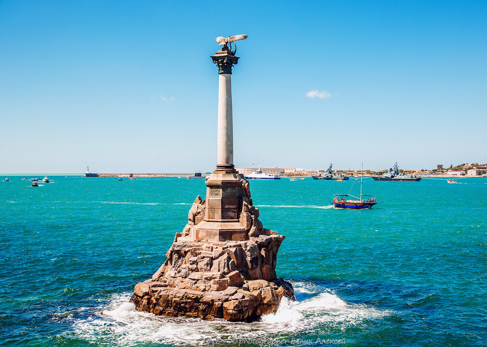

Памятник посвящен важному событию — 50-летней годовщине Первой обороны Севастополя в период Крымской войны. Героический поступок совершили русские военные в 1854 году, приняв решение затопить свои корабли, чтобы не дать врагу пройти по морю в Севастополь. В результате бухта стала недоступной для англо-французского флота, помогавшего Турции. Севастополь являлся главной базой Черноморского флота Российской империи, поэтому его защита была стратегически необходимой задачей. Оборону возглавляли прославленные военачальники В. А. Корнилов и П. С. Нахимов. Они приняли это важное решение, так как осознавали количественное превосходство противника и опасную возможность их проникновения в бухту. От потопленных кораблей над поверхностью воды оставались торчать мачты, которые могли пробить дно вражеских кораблей. В первую очередь были потоплены 7 устаревших кораблей, однако позже ко дну были отправлены и хорошие судна. Всего под воду Севастопольской бухты ушло около 90 кораблей Черноморского флота. Тем не менее, жертвы были не напрасными и оборона выстояла до заключения мирного соглашения в 1856 году. |
 |